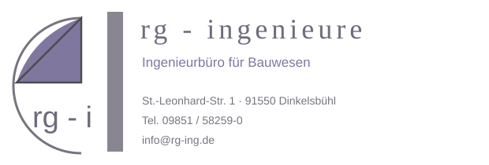

Verständnis vor Berechnung
Bevor Zahlen entstehen, müssen Aufgabe, Nutzung, Entwurf und Randbedingungen verstanden sein.

Ingenieurbüro für BauwesenÜBER RG INGENIEURE
Tragwerksplanung ist Teamarbeit. Gute Lösungen entstehen dort, wo Entwurf, Konstruktion und die Anforderungen des Bauvorhabens früh zusammengeführt werden.
DINKELSBÜHL · ELLWANGEN · MÜNCHENDAS BÜRO
RG Ingenieure ist ein Ingenieurbüro für Bauwesen mit Zentrale in Dinkelsbühl sowie Stützpunkten in Ellwangen und München. Damit wird der persönliche Austausch nicht nur als Haltung, sondern auch räumlich sichtbar.
Im Mittelpunkt stehen eine klare technische Kommunikation, nachvollziehbare Planung und die konstruktive Zusammenarbeit mit allen Projektbeteiligten.
01 / WOFÜR WIR STEHEN
Bevor Zahlen entstehen, müssen Aufgabe, Nutzung, Entwurf und Randbedingungen verstanden sein.
Klare Kommunikation reduziert Reibungsverluste und bringt Entscheidungen schneller auf eine belastbare Grundlage.
Ein Tragwerk soll nicht nur rechnerisch funktionieren, sondern sinnvoll mit Architektur, Material und Ausführung zusammenspielen.
Planung muss für Projektbeteiligte nachvollziehbar, strukturiert und für die nächsten Schritte nutzbar sein.
02 / PLANUNG IM DIALOG
RG Ingenieure versteht sich als verbindendes Element zwischen Bauherrschaft, Architektur, Fachplanung und Prüfung.
Kurze Abstimmungswege, klare Zuständigkeiten und ein gemeinsames Verständnis der Aufgabe schaffen die Grundlage für belastbare Entscheidungen.
So kann ein Projekt ablaufen ↗03 / STANDORTE & ANSPRECHPARTNER
Dipl.-Ing. Univ. H. Ruck
St.-Leonhard-Str. 1
91550 Dinkelsbühl
Dipl.-Ing. Andreas Hutter
Priestergasse 17
73479 Ellwangen
Dr.-Ing. Veronika Hofmann
Arthur Honegger Weg 8
80939 München
HALTUNG
„Gute Planung entsteht
im Gespräch.“